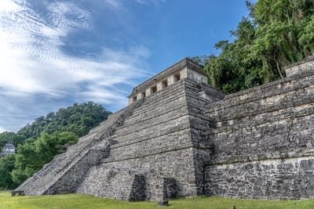

Tours
We have plans for all groups or individuals, if none of our published plans suits your needs please contact us and we will create a plan just for your need.
Punto Sur
Represents "the last corner of Mexico", in this place is the Celarain Lighthouse, from where you have an incredible panoramic view of the Caribbean Sea. Also here is the Navigation Museum and the Mayan Temple of the Caracol.
It is one of the biggest attractions in Cozumel. Besides being a beach club where you can spend all day, it has an incredible series of replicas of Mayan pyramids. It is also famous for its corals with a lot of marine life, some sculptures submerged in the water and a beautiful cenote.
Chankanaab
Coral Reefs
The great wealth of reefs that surround the Island of Cozumel has made this destination one of the best places in the world for diving and snorkelling. We highly recommend diving with Ocean Nomads. They have experiences and routes for both beginners and professional divers.